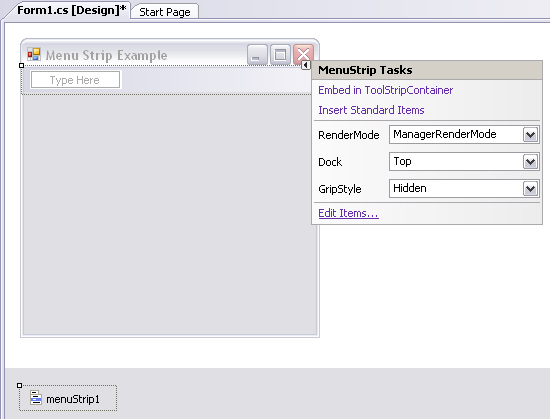
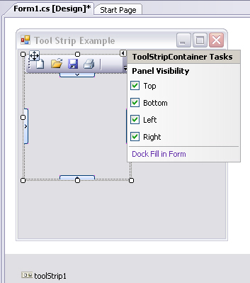

Chapter 19 - Building a better window with System.Windows.Forms
Content
This chapter is the first of three aimed at introducing you to the process of building traditional form-based desktop applications. Here, you'll learn how to build a highly stylized main window using the Form and Application classes.
This chapter also illustrates how to capture and respond to user input (i.e., handle mouse and keyboard events) within the context of a GUI desktop environment.
Finally, you will learn to construct menu systems, toolbars, status bars, and multiple-document interface (MDI) applications, both by hand and using the designers incorporated into Visual Studio.
Overview of the System.Windows.Forms namespace
Like any namespace, System.Windows.Forms is composed of various classes, structures, delegates, interfaces, and enumerations. From a high level, the hundreds of types within the System.Windows.Forms namespace can be grouped into the following broad categories:
- Core infrastructure: These are types that represent the core operations of a .NET Forms program (Form, Application, etc.) and various types to facilitate interoperability with legacy ActiveX controls.
- Controls: These are types used to create rich UIs (Button, MenuStrip, ProgressBar, DataGridView, etc.), all of which derive from the Control base class. Controls are configurable at design time and are visible (by default) at runtime.
- Components: These are types that do not derive from the Control base class but still provide visual features to a .NET Forms program (ToolTip, ErrorProvider, etc.). Many components (such as the Timer) are not visible at runtime, but can be configured visually at design time.
- Common dialog boxes: Windows Forms provides a number of canned dialog boxes for common operations (OpenFileDialog, PrintDialog, etc.). You can certainly build your own custom dialog boxes if the standard dialog boxes do not suit your needs.
Reads some of the core .NET 2.0 System.Windows.Forms types at page 606 of textbook.
Introduction to Windows Forms applications, Forms and Controls
In Windows Forms, a form is a visual surface on which you display information to the user. You ordinarily build Windows Forms applications by adding controls to forms and developing responses to user actions, such as mouse clicks or key presses.
A control is a discrete user interface (UI) element that displays data or accepts data input. (MSDN)
The Role of the Application class
The Application class defines numerous static members that allow you to control various low-level behaviors of a Windows Forms application. For example, the Application class defines a set of events that allow you to respond to events such as application shutdown and idle-time processing.
Here are some other methods to be aware of:
- DoEvents(): Provides the ability for an application to process messages currently in the message queue during a lengthy operation.
- Exit(): Terminates the Windows application and unloads the hosting AppDomain.
- EnableVisualStyles(): Configures your application to support Windows XP visual styles. Do note that if you enable XP styles, this method must be called before loading your main window via Application.Run().
- Run(): Starts an application message loop on the current thread and, optionally, makes a form visible.
The Application class also defines a number of properties, many of which are read-only in nature. As you examine the below table, note that most of these properties represent an "application-level" trait such as company name, version number, and so forth.
| CompanyName |
Retrieves the value of the assembly-level [AssemblyCompany] attribute. |
| ExecutablePath |
Gets the path for the executable file. |
| ProductName |
Retrieves the value of the assembly-level [AssemblyProduct] attribute. |
| ProductVersion |
Retrieves the value of the assembly-level [AssemblyVersion] attribute. |
| StartupPath |
Retrieves the path for the executable file that started the application. |
Finally, the Application class defines various static events, some of which are as follows:
- ApplicationExit: Occurs when the application is just about to shut down.
- Idle: Occurs when the application’s message loop has finished processing the current batch of messages and is about to enter an idle state (as there are no messages to process at the current time).
- ThreadExit: Occurs when a thread in the application is about to terminate.
The functionality of the Control class
The System.Windows.Forms.Control class establishes the common behaviors required by any GUI type. The core members of Control allow you to configure the size and position of a control, capture keyboard and mouse input,
get or set the focus/visibility of amember, and so forth.
Reads core properties of the Control Type at page 613 of textbook.
Reads some events of interest, grouped by related functionality at page 613 of textbook.
Finally, the Control base class also defines a number of methods that allow you to interact with any Control-derived type. As you examine the methods of the Control type, you will notice that a good number of them have an On prefix followed by the name of a specific event
(OnMouseMove, OnKeyUp, OnPaint, etc.). Each of these On-prefixed virtual methods is the default event handler for its respective event. If you override any of these virtual members, you gain the ability to perform any necessary pre- or postprocessing of the event before (or after) invoking your parent's default implementation.
Reads responding to the MouseMove event, determining which mouse button was clicked and responding to keyboard events at page 615 to 617 of textbook.
The functionality of the Form class
The Form class is typically (but not necessarily) the direct base class for your custom Form types. In addition to the large set of members inherited from the Control, ScrollableControl, and ContainerControl classes,
the Form type adds additional functionality in particular to main windows, MDI child windows, and dialog boxes. Let’s start with the core properties in below table.
| AcceptButton |
Gets or sets the button on the Form that is clicked when the user presses the Enter key. |
| ActiveMDIChild |
Used within the context of an MDI application. |
| IsMDIChild |
| IsMDIContainer |
| CancelButton |
Gets or sets the button control that will be clicked when the user presses the Esc key. |
| ControlBox |
Gets or sets a value indicating whether the Form has a control box. |
| FormBorderStyle |
Gets or sets the border style of the Form. Used in conjunction with the FormBorderStyle enumeration. |
| Menu |
Gets or sets the menu to dock on the Form. |
| MaximizeBox |
Used to determine if this Form will enable the maximize and minimize boxes. |
| MinimizeBox |
| ShowInTaskBar |
Determines if this Form will be seen on the Windows taskbar. |
| StartPosition |
Gets or sets the starting position of the Form at runtime, as specified by the FormStartPosition enumeration. |
| WindowState |
Configures how the Formis to be displayed on startup. Used in conjunction with the FormWindowState enumeration. |
In addition to the expected On-prefixed default event handlers, The below table gives a list of some coremethods defined by the Form type.
| Activate() |
Activates a given Form and gives it focus. |
| Close() |
Closes a Form. |
| CenterToScreen() |
Places the Form in the dead-center of the screen. |
| LayoutMDI() |
Arranges each child Form (as specified by the LayoutMDI enumeration) within the parent Form. |
| Show() |
Displays the Form to the user. (Inherited from Control.) |
| ShowDialog() |
Displays a Form as amodal dialog box. |
Finally, the Form class defines a number of events, many of which fire during the form's lifetime.
| Activated |
Occurs whenever the Form is activated,meaning the Form has been given the current focus on the desktop. |
| Closed, Closing |
Used to determine when the Form is about to close or has closed. |
| Deactivate |
Occurs whenever the Form is deactivated, meaning the Form has lost current focus on the desktop. |
| Load |
Occurs after the Form has been allocated into memory, but is not yet visible on the screen. |
| MDIChildActive |
Sent when a child window is activated. |
Working with MenuStrips and ContextMenuStrips
The recommended control for building a menu system is MenuStrip. This control allows you to create "normal" menu items such as File >> Exit,
and you may also configure it to contain any number of relevant controls within the menu area. Here are some common UI elements that may be contained within a MenuStrip:
- ToolStripMenuItem: A traditional menu item
- ToolStripComboBox: An embedded ComboBox
- ToolStripSeparator: A simple line that separates content
- ToolStripTextBox: An embedded TextBox
Programmatically speaking, the MenuStrip control contains a strongly typed collection named ToolStripItemCollection. Like other collection types,
this object supports members such as Add(), AddRange(), Remove(), and the Count property. While this collection is typically populated indirect using various design-time tools,
you are able to manually manipulate this collection if you so choose.
MenuStrips can be highly customized using the Visual Studio Forms designer. For example, if you look at the extreme upper-left of the control, you will notice a small arrow icon.
After you select this icon, you are presented with a context-sensitive "inline editor", as shown in the below figure.

Many Windows Forms controls support such context-sensitive inline editors. As far as MenuStrip is concerned, the editor allows you to quickly do the following:
- Insert a "standard" menu system (File, Save, Tools, Help, etc.) using the Insert Standard Items link.
- Change the docking and gripping behaviors of the MenuStrip.
- Edit each item in the MenuStrip (this is simply a shortcut to selecting a specific item in the Properties window).
Context menu is a context-sensitive pop-up (i.e, right-click) menu. The ContextMenuStrip type was the class of choice for building context menus.
Like the MenuStrip type, ContextMenuStrip maintains a ToolStripItemCollection to represent the possible subitems (such as ToolStripMenuItem, ToolStripComboBox, ToolStripSeperator, ToolStripTextBox, etc.).
ToolStripMenuItem defines a number of members that allow you to check, enable, and hide a given item. The below table gives a rundown of some (but not all) of the interesting properties.
| Checked |
Gets or sets a value indicating whether a check mark appears beside the text of the ToolStripMenuItem. |
| CheckOnClick |
Gets or sets a value indicating whether the ToolStripMenuItem should automatically appear checked/unchecked when clicked. |
| Enabled |
Gets or sets a value indicating whether the ToolStripMenuItem is enabled. |
Working with StatusStrips
In addition to amenu system, many Forms also maintain a status bar that is typically mounted at the bottom of the Form.
A status bar may be divided into any number of "panes" that hold some textual (or graphical) information such as menu help strings, the current time, or other application-specific information.
Like a status bar, a StatusStrip can consist of any number of panes to hold textual/graphical data using a ToolStripStatusLabel type.
However, status strips have the ability to contain additional tool strip items such as the following:
- ToolStripProgressBar: An embedded progress bar.
- ToolStripDropDownButton: An embedded button that displays a drop-down list of choices when clicked.
- ToolStripSplitButton: This is similar to the ToolStripDropDownButton, but the items of the drop-down list are displayed only if the user clicks directly on the drop-down area of the control.
The ToolStripSplitButton also has normal buttonlike behavior and can thus support the Click event.
Working with ToolStrips
Toolbars typically provide an alternate means to activate a given menu item. Thus, if the user clicks a Save button, this has the same effect as selecting File >> Save.
Much like MenuStrip and StatusStrip, the ToolStrip type can contain numerous toolbar items:
- ToolStripButton
- ToolStripLabel
- ToolStripSplitButton
- ToolStripDropDownButton
- ToolStripSeparator
- ToolStripComboBox
- ToolStripTextBox
- ToolStripProgressBar
Like other Windows Forms controls, the ToolStrip supports an inline editor that allows you to quickly add standard button types (File, Exit, Help, Copy, Paste, etc.) to a ToolStrip,
change the docking position, and embed the ToolStrip in a ToolStripContainer.
Working with ToolStripContainers
ToolStrips, if required, can be configured to be "dockable" against any or all sides of the Form that contains it. To illustrate how you can accomplish this,
right-click your current ToolStrip using the designer and select the Embed in ToolStripContainer menu option. Once you have done so,
you wil find that the ToolStrip has been contained within a ToolStripContainer. For this example, select the Dock Fill in Form option.

If you run your current update, you will find that the ToolStrip can be moved and docked to each side of the container.
Building an MDI application
MDI applications allow users to have multiple child windows open at the same time within the same topmost window. In the world of MDIs, each window represents a given "document" of the application.
For example, Visual Studio is an MDI application in that you are able to have multiple documents open from within an instance of the application.
When you are building MDI applications using Windows Forms, your first task is to (of course) create a brand-new Windows application.
The initial Form of the application typically hosts amenu system that allows you to create new documents (such as File >> New) as well as arrange existing open windows (cascade, vertical tile, and horizontal tile).
Additionally, MDI applications allow you to "merge menus". As mentioned previously, parent windows typically have amenu system that allows the user to spawn and organize additional child windows.
However, what if the child window also maintains a menuing system? If the user maximizes a particular child window, you need to merge the child's menu system within the parent Form to allow the user to activate items from each menu system.
The Windows Forms namespace defines a number of properties, methods, and events that allow you to programmatically merge menu systems. In addition, there is a "default merge" system, which works in a good number of cases.
Summary
This chapter introduced the fine art of building a UI with the types contained in the System.Windows.Forms namespace. A GUI application needs a class that derives from Form and a Main() method that invokes Application.Run().
During the course of this chapter, you learned how to build topmost menus (and pop-up menus) and how to respond to a number of menu events. You also came to understand how to further enhance your Form types using toolbars and status bars.
Finally, this chapter wrapped up by illustrating how to construct MDI applications using Windows Forms.